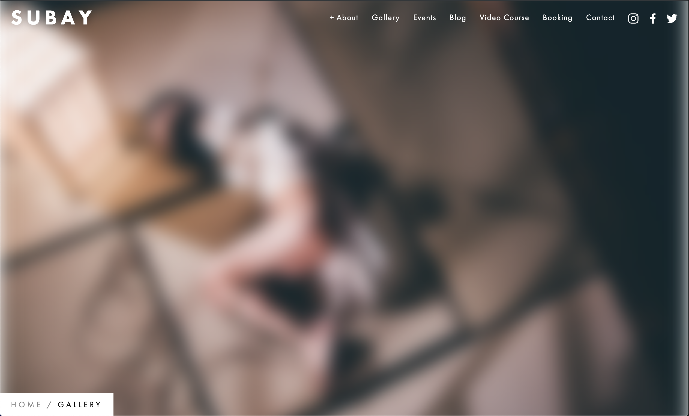
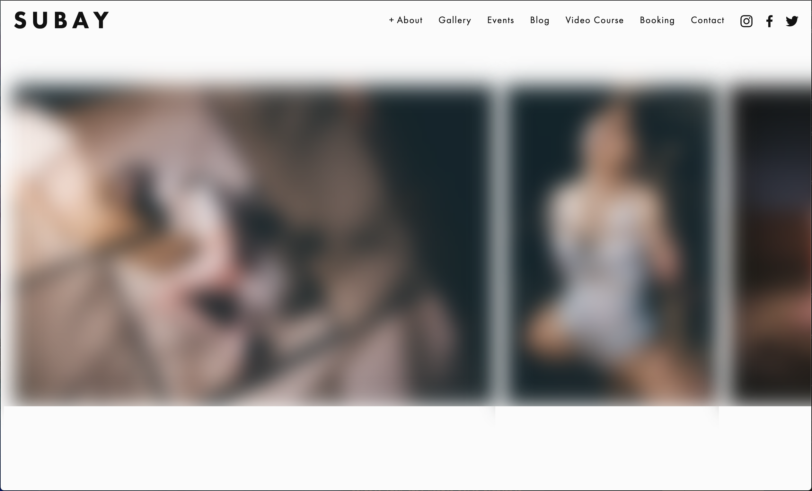
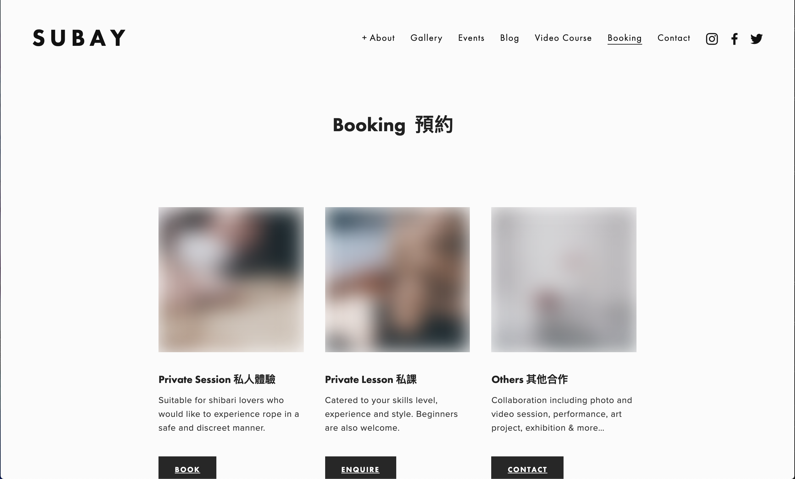
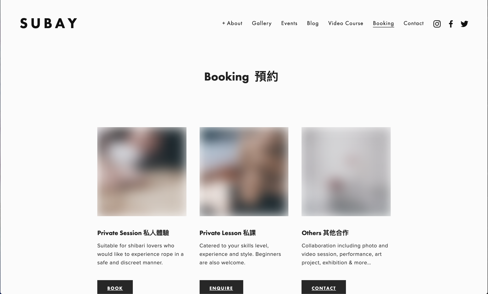

portfolio 2019 DOWNLOAD CV
updated: 5 Nov 2019
-
I. Freelance works
-
2018/2-5: Business Card Template Design for Law company - Shum Wong & Co Solicitors
Note: for privacy concern, the company name & contacts in the pictures below are altered or blurred
Client:
Shum Wong & Co Solicitors, a law company based in Hong KongKeywords:
legal, business, modern, trustworthy, bi-lingual, classicRequirement:
client would like their business card to be re-designed, based on their existing logo.Challenges: A lot of information needs to fit into the limited card body - 2 to 3 rows of job title, name, a lengthy address and 4 contact info - in both chinese and english. Also the template has to be generic enough so everyone in the firm can reuse it for their cards
Solution:
I had produced 4-5 different initial design concepts, and eventually client decided to go with the layout that focuses on 1 language in each side of the card. Client also decided to simplify their info that needs to be displayed on the card - which is greatly helpful. Also, I had slightly modified client's company logo font (from sans serif to a serif) to suit the design, and simplfied it -
2019/10: Personal website creation for shibari artist Subay
Note: the site contains NSFW images so most of the images in the screenshots had been blurred.
  

Client:
Subay, an international Performer and Educationer for shibari artKeywords:
art, minimalist, professional, portfolio, events, blogRequirement:
needs to showcase large amount of photography, needs blog & event page, needs to be very easy for her (she has no IT background) to update all the contents by herself, and tight timelineSolution:
we decided to go with SquareSpace CMS and picked a suitable photography/portfolio theme for her, and modified it to suit the content
-
-
II. Coding demos
-
2019: Trello-inspired todo list
You can add multiple checklists to the page. You can also edit checklist name and delete list. For each todo item, you can pin them on top, edit, delete or add a sub-list for the item. Done items automatically sink to the bottom.
Tech:
HTML, CSS (SASS), Javascript, React JS, WebpackView live demo:
click this linkView code on git repo:
click this link2019: Worker order list sorting & filtering page
This is a single-page responsive website that displays a list of work orders. You can filter the list by the worker's name. By defalut the list is ordered by deadline, from newest to oldest, and you can reverse the order.
Tech:
HTML, CSS (SASS), Javascript, React JS, Axios, WebpackView live demo:
click this linkView code on git repo:
click this link
-